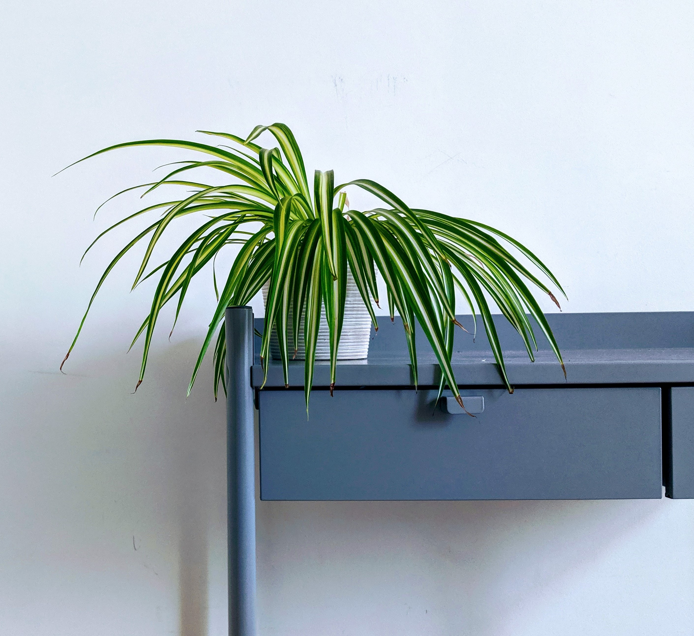
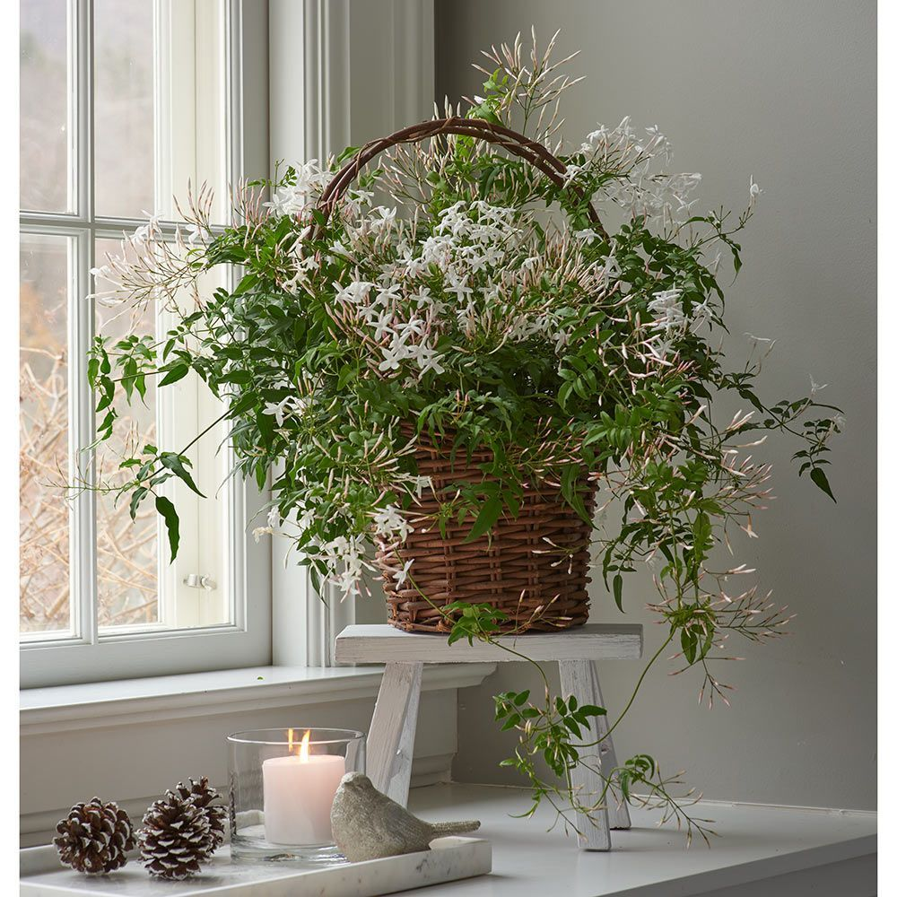
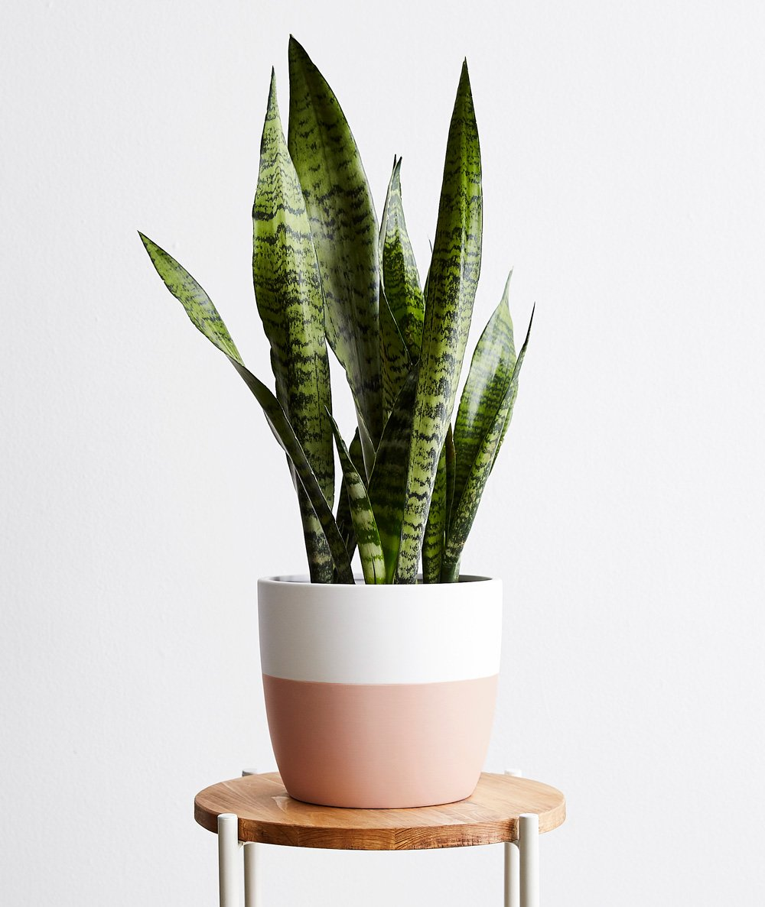
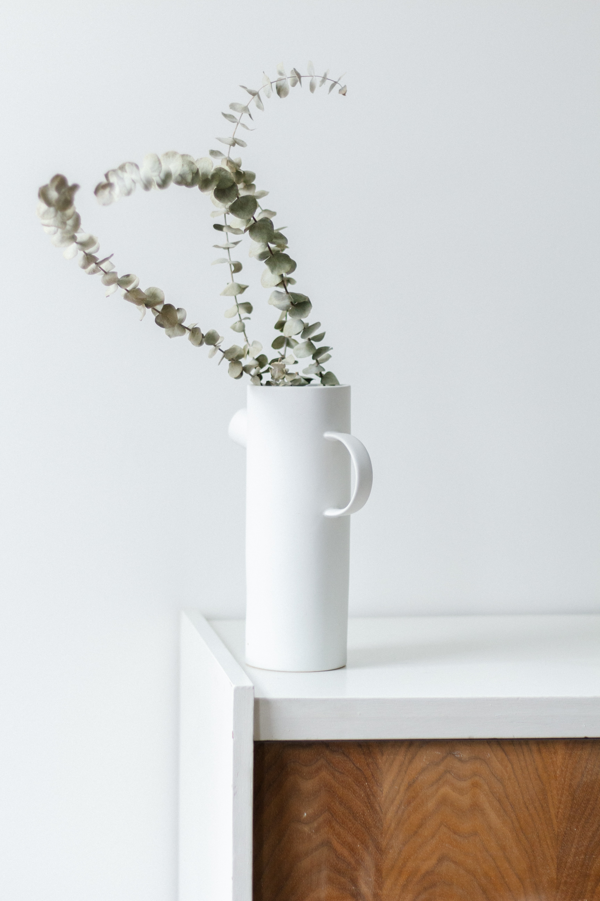
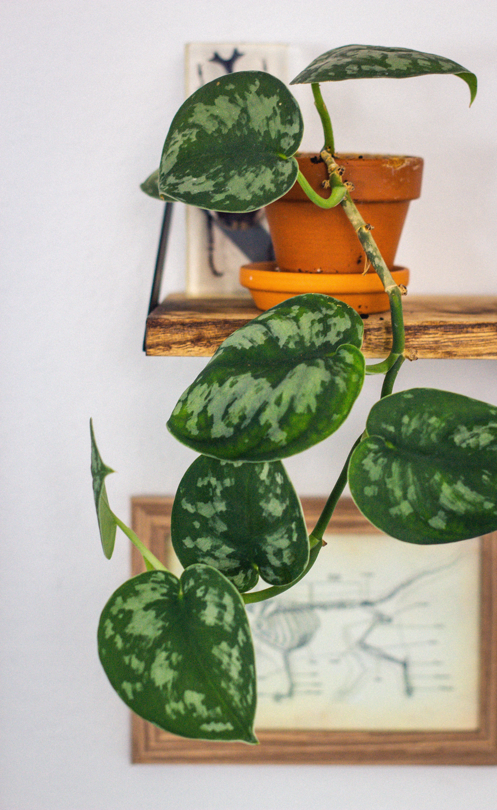
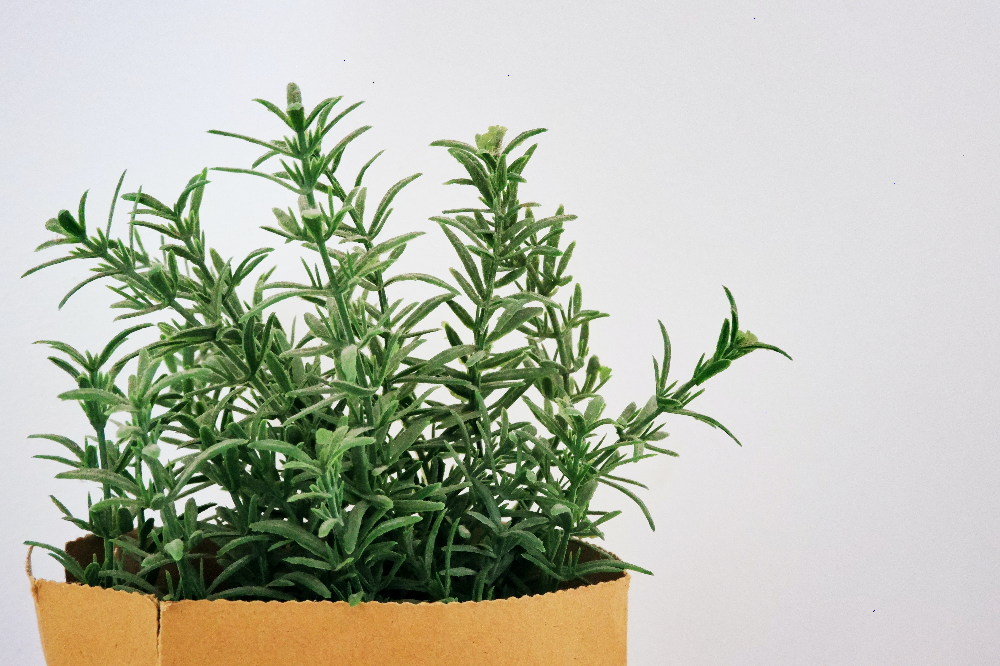
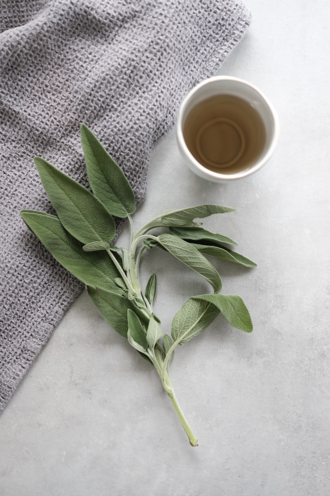
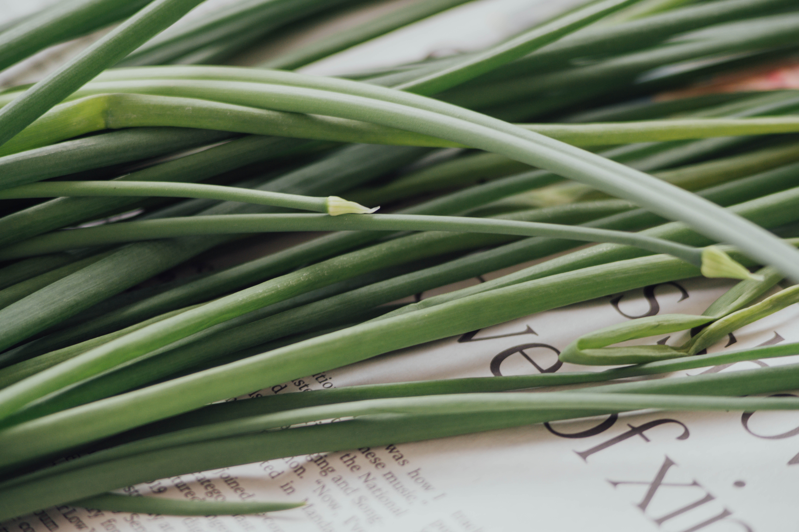

Learn all about Plants and Herbs to help cleanse your space!

Spider plants are amazing at air purification! They have the ability to remove
formaldehyde from the air and convert it to carbon dioxide. They also increase humdiity in your space.
So if you are in Colorado and suffer from a lack of humidity in your home, a spider plant is a great addition.
If you have allergies, great news! Spider plants clear the air by removing dust, pollen, pet dander and other irritants so you can breathe better.

Jasmine plants smell so beautiful and are known to have a calming effect on humans. Its soothing
smell helps to eliminate bad odors and promote a stress-free sleep. The plant's oil is also great for conditioning hair or acting as an antiseptic! Making
the oil is great for a random DIY day.

The snake plant is not only great at establishing some feng shui in your home, but it is also
one of the few plants that purifies air at night. This makes it an ideal plant for regulating healthy
air flow in your home. Snake plants removes harmful agents like toluene, xylene, and benzene from the environment.

If you have congestion in your sinuses, throw a eucalyptus plant in your shower and turn up the heat. Eucalyptus leaves aid in decreasing mucus and expanding the bronchi in your lungs.
Eucalyptus plants are known for their scent and sinus soothing properties.

Similar to the spider plant, Devil's Ivy is an air purifying plant and increases humidity. They are great for decoration
becuase you can train the leaves to grow in any direction - in a sprial up or poll, or cascading down from your favorite
bookshelf. For plant lovers who dont have a green thumb, this plant is hard to kill and is a great introduction for taking care of houseplants.
 Lavendar can be used to treat fungal infections, insomnia, and anxiety. It also promotes healthy blood circulation and its oil
can assit with proper digestion. Lavendar oil can also be used as a bug repellent because its scent is very strong.
Lavendar can be used to treat fungal infections, insomnia, and anxiety. It also promotes healthy blood circulation and its oil
can assit with proper digestion. Lavendar oil can also be used as a bug repellent because its scent is very strong.

Rosemary has been used to treat headaches, poor circulation, inflammatory diseases,
and physical and mental fatigue. Rosemary is helpful in increasing blood flow to the brain and clearing the mind, and increasing awareness.
When used as a tea, it helps soothe sore throats and colds.

Sage is healthy to consume because of the high amount of antioxidants it contains in its leaves.
It may reduce blood sugar levels and support memory.

Lemongrass can be used to relive joint pain, fight bacterial infection, regulate cholestrol,
and promote skin health. Lemongrass also helps with menstrual cramps and PMS symptoms. It is delicious as a tea, especially when mixed with cinnamon leaves.